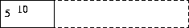
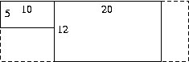
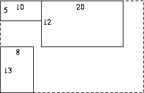

| Source file: | flow.{c, cpp, java} |
| Input file: | flow.in |
| Output file: | flow.out |
A flow layout manager takes rectangular objects and places them in a rectangular window from left to right. If there isn't enough room in one row for an object, it is placed completely below all the objects in the first row at the left edge, where the order continues from left to right again. Given a set of rectangular dimensions and a maximum window width, you are to write a program that computes the dimensions of the final window after all the rectangles have been placed in it.
For example, given a window that can be at most 35 units wide, and three rectangles with dimensions 10 x 5, 20 x 12, and 8 x 13, the flow layout manager would create a window that looked like the figures below after each rectangle was added.
|  |  |  |
The final dimensions of the resulting window are 30 x 25, since the width of the first row is 10+20 = 30 and the combined height of the first and second rows is 12+13 = 25.
Input: The input consists of one or more sets of data, followed by a final line containing only the value 0. Each data set starts with a line containing an integer, m, 1 ≤ m ≤ 80, which is the maximum width of the resulting window. This is followed by at least one and at most 15 lines, each containing the dimensions of one rectangle, width first, then height. The end of the list of rectangles is signaled by the pair -1 -1, which is not counted as the dimensions of an actual rectangle. Each rectangle is between 1 and 80 units wide (inclusive) and between 1 and 100 units high (inclusive).
Output: For each input set
print the width of the resulting window, followed by a space, then the
lowercase letter "x",
followed by a space, then the height of the resulting window.
| Example input: | Example output: |
| 35 10 5 20 12 8 13 -1 -1 25 10 5 20 13 3 12 -1 -1 15 5 17 5 17 5 17 7 9 7 20 2 10 -1 -1 0 |
30 x 25 23 x 18 15 x 47 |
Last modified on October 26, 2004 at 8:15 PM.